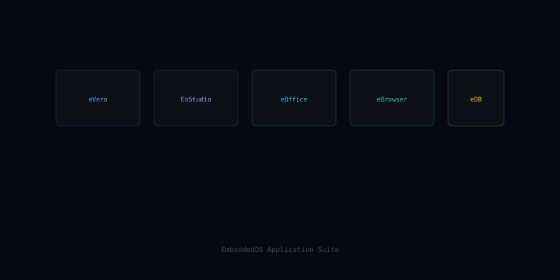

eApps — 60+ First-Party Embedded Applications
eApps is the EoS first-party application catalog — over 60 production-ready apps spanning media, productivity, communications, devtools, and system utilities, each packaged for one-command install across every eos-platform profile.
What eApps is
Where most embedded platforms ship with an empty desktop and a long shopping list, EoS ships with a curated, integration-tested app library: media players, document editors, IDEs, browsers, mail clients, file managers, system monitors, settings panels, and more — all built against the same EoS / EIPC / EAI surface.
Apps are signed, sandboxed, and delivered through the App Store — install or update with one CLI command or a tap.
Features
The shape of eApps at a glance.
Media Suite
Audio player, video player, photo viewer, podcast / radio, screen recorder.
Productivity
Notes, calendar, file manager, task tracker, calculator — all integrated with eDB.
Communications
Mail, chat, video conferencing, contacts — capability-gated through EIPC.
Developer Tools
Terminal, code editor, REST inspector, log viewer, system monitor.
Settings & System
Settings panel, network manager, user / permission editor, update manager.
Sandboxed by Default
Each app runs under a capability profile — explicit grants for filesystem, network, sensors.
Signed Distribution
All first-party apps signed by the Foundation; signatures verified by eBuild and eApps.
App Store CLI & UI
`eapps install`, `eapps update`, or browse via the embedded App Store front-end.
Themable
All apps respect the eos-platform profile theme and dark/light mode.
Open source on GitHub
eApps is MIT licensed and developed in the open. Issues, discussions, and pull requests welcome.
In the EoS stack
eApps is the highlighted layer below.
Pairs well with
Sibling components that eApps commonly works alongside.
Ready to build with eApps?
Start with the docs, browse the source, or join the community.